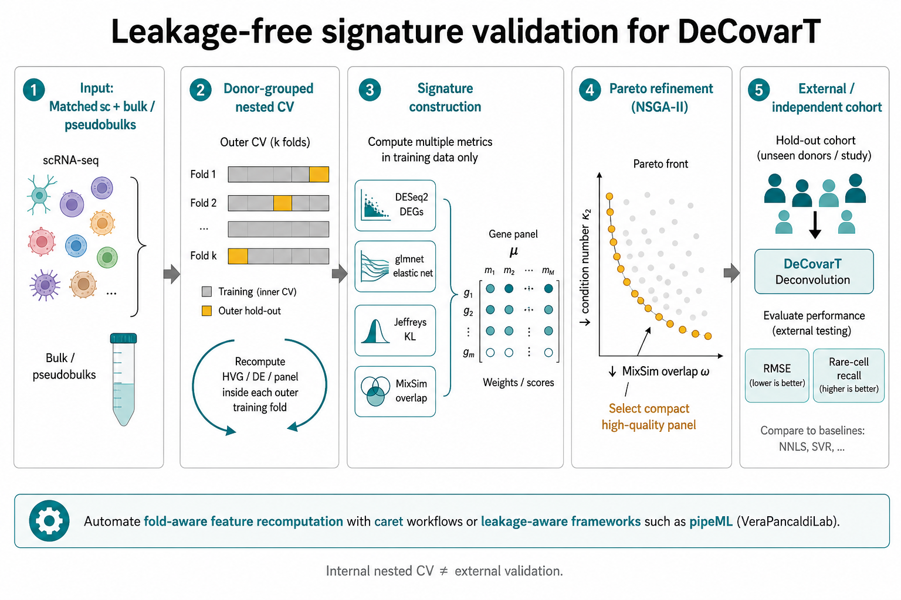
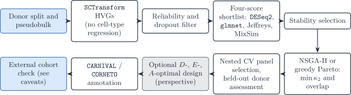

# Fitness of a soft gene mask: condition number of the mean signature
# and average MixSim overlap of the type laws on the selected genes.
# mu: G0 x J means; Sigma: list of J covariance matrices (G0 x G0).
panel_fitness <- function(mask, mu, Sigma, threshold = 0.5) {
g <- which(mask > threshold)
if (length(g) < ncol(mu)) {
return(c(Inf, Inf))
}
kappa_g <- kappa(mu[g, , drop = FALSE], exact = TRUE)
ov <- MixSim::overlap(
Pi = rep(1 / ncol(mu), ncol(mu)),
Mu = t(mu[g, , drop = FALSE]),
S = simplify2array(lapply(Sigma, function(A) A[g, g, drop = FALSE]))
)
c(kappa_g, ov$BarOmega)
}
pareto <- mco::nsga2(
fn = panel_fitness,
idim = nrow(mu),
odim = 2,
mu = mu,
Sigma = Sigma,
lower.bounds = rep(0, nrow(mu)),
upper.bounds = rep(1, nrow(mu)),
popsize = 100,
generations = 50
)
# pareto$value: objectives; pareto$par: masks; pareto$pareto.optimalAppendix S6 — Synthetic scenario for comparing gene-screening strategies
Source:vignettes/S6-feature-screening-scenario.qmd
Notation (shared by all vignettes; aligned with the article)
Gene g=1,\ldots,G; cell type j=1,\ldots,J (a second type is \ell); bulk sample i=1,\ldots,N; reference donor (replicate) r=1,\ldots,R; cell c, with C_j reference cells of type j. The index i is dropped inside a derivation and restored in the model statements.
Symbol Meaning y_{gi}, \boldsymbol{y}_{\cdot i} Bulk expression on a linear scale m_{ji}, n_i=\sum_jm_{ji} Cells of type j in bulk sample i, and their total \tilde{\boldsymbol{y}}_{\cdot i}=\boldsymbol{y}_{\cdot i}/n_i Bulk expression per cell \boldsymbol{p}_{\cdot i}\in\Delta^{J-1} Cell fractions, p_{ji}=m_{ji}/n_i \boldsymbol{\rho}_{i}\in\mathbb{R}^{J-1} Isometric log-ratio (ILR) coordinates of \boldsymbol{p}_{\cdot i}, \boldsymbol{p}_{\cdot i}=\operatorname{softmax}(\mathbf{V}\boldsymbol{\rho}_i) with a Helmert basis \mathbf{V} \boldsymbol{q}_{\cdot i} Transcript fractions, q_{ji}=p_{ji}S_j/\sum_\ell p_{\ell i}S_\ell \boldsymbol{\mu}_{\cdot j}, \boldsymbol{\Sigma}_j Mean and G\times G gene–gene covariance of a type-j population profile \boldsymbol{\Omega}_j=\boldsymbol{\Sigma}_j^{-1} Precision matrix of type j \boldsymbol{\Gamma}_g J\times J covariance across cell types for gene g ( bMIND,EPIC-unmix,Unico)\boldsymbol{x}_{\cdot j,i} Purified profile of type j in sample i x_{gc}, \boldsymbol{x}_{\cdot c}, s_c Raw UMI count of gene g in reference cell c, and the size factor of cell c \boldsymbol{\lambda}_{\cdot c}, \boldsymbol{z}_{\cdot c} Size-free expression of cell c; its latent log-expression in the Poisson log-normal (PLN) model \tilde{\boldsymbol{\mu}}_{\cdot j}=C_j^{-1}\sum_{c\in j}\boldsymbol{x}_{\cdot c}=S_j\boldsymbol{\theta}_{\cdot j} Per-cell mean of the raw UMI counts of the C_j reference cells of type j \boldsymbol{\theta}_{\cdot j}, S_j=\mathbf{1}^{\top}\tilde{\boldsymbol{\mu}}_{\cdot j} Relative abundance (\mathbf{1}^{\top}\boldsymbol{\theta}_{\cdot j}=1) and mean transcriptome size of a type-j cell \boldsymbol{\Sigma}_{W,j}, \boldsymbol{\Sigma}_{B,j} Within-donor cell-to-cell covariance of type j (one single-cell sample); between-donor covariance of type j (needs R\ge2 donors) \boldsymbol{S}_W(\boldsymbol{v})=\sum_jv_j\boldsymbol{\Sigma}_{W,j}, \boldsymbol{S}_B(\boldsymbol{v})=\sum_jv_j^2\boldsymbol{\Sigma}_{B,j} Linear and quadratic covariance mixtures with weights \boldsymbol{v} \boldsymbol{V}_j Empirical covariance of type j, computed from its reference profiles or cells \boldsymbol{R}_j Empirical correlation matrix of type j (bold; the scalar R is the number of donors) \boldsymbol{\Delta}_j=\operatorname{diag}(\boldsymbol{V}_j) Diagonal matrix of the empirical variances of type j \lambda Penalty of a regularised covariance or precision estimator \psi_g, \mathcal{D}_g Negative binomial dispersion of gene g; deviance of gene g in a count model \delta_{gj} Detection rate of gene g in type j (fraction of cells with a non-zero count) \varpi_{\ell\mid j}, \varpi_{j\ell}, \bar\varpi MixSim overlap: probability of misclassifying a draw of j into \ell, pairwise overlap \varpi_{j\ell}=\varpi_{\ell\mid j}+\varpi_{j\mid\ell}, and its average over pairs ( BarOmega)\boldsymbol{T}_{ji}=\sum_{c=1}^{m_{ji}}\boldsymbol{X}_{jic} Total expression contributed by type j to sample i a_i Sample-wide scale between the reference and the bulk library c_i=a_in_i, \phi_i=a_i^2n_i Mean scale and variance scale of the single-cell model b_g, \tilde b_g=b_g^{\mathrm{bulk}}/b_g^{\mathrm{ref}} Capture efficiency of gene g in one protocol, and the gene-wise platform ratio; \tilde{\boldsymbol{B}}=\operatorname{diag}(\tilde{\boldsymbol{b}}) \boldsymbol{D}_i Diagonal, heteroscedastic bulk measurement noise A tilde marks a quantity rescaled to a reference unit: per cell (\tilde{\boldsymbol{y}}, \tilde{\boldsymbol{\mu}}) or relative to the reference protocol (\tilde{\boldsymbol{b}}). \boldsymbol{\Sigma}_j couples genes within one cell type; \boldsymbol{\Gamma}_g couples cell types within one gene. A symbol absent from this table is defined in the vignette that uses it, with one meaning there.
Scope
This appendix describes a simulation that compares gene-screening strategies on references where the informative genes are known. The theory behind each strategy (tests, effect sizes, Fisher information, condition number, selection effect) is in 3.1 Gene selection for the reference. Separation measures (overlap, Hellinger, Jeffreys) are defined in 4.2. No chunk is executed and no result is reported here: the page is a design, with code sketches.
1 Aim
The simulation answers three questions.
- Does the omnibus gate with an effect-size rank (3.1) recover the genes that carry information about \boldsymbol{p} better than a top-k ratio or a concatenation of one-versus-rest markers?
- When two types differ in covariance only, does a covariance-aware objective (Fisher information, overlap) keep the genes that a univariate screen drops (3.1)?
- How much does selection change the deconvolution error of DeCovarT, compared with keeping every gene that passes the presence gate and letting the covariance weight them (3.1)?
2 Data-generating mechanism
References are simulated from the mean and covariance scenarios of 4.1, with NB counts per cell and size factors s_c. Genes belong to five known classes:
| Class | Generated as | Expected behaviour |
|---|---|---|
| mean marker | type means differ, \boldsymbol{\Sigma}_{W,j} shared | kept by every screen |
| covariance-only gene | equal means, type-specific correlations | dropped by univariate screens |
| perfect marker | expressed in one type only | removed by the presence gate |
| platform-discordant gene | gene-wise ratio \tilde b_g\neq1 in the bulk only | flagged by the range bound |
| noise gene | no type effect | removed by the gate |
Bulk samples follow the DeCovarT convolution over a composition grid \mathcal{P}\subset\Delta^{J-1} with balanced, rare-type, sparse and near-collinear compositions. The factors varied are the cell numbers C_j (including types with C_j<G), the separation regime (mean-driven or covariance-only) and the share of platform-discordant genes. Their values, the number of replications and the random-number streams are fixed before any run, following the ADEMP structure of 4.1.
3 Strategies compared
| ID | Strategy | Theory |
|---|---|---|
| A | top-k genes by the between/within ratio of Pearson residuals, equal-cell or equal-type weights | 3.1 |
| B | presence gate, omnibus quasi-likelihood F as an FDR gate, rank by effect size | 3.1 |
| C | one-versus-rest markers per type, concatenated, then the candidate with the smallest \kappa_2 (CIBERSORT, DWLS) | 3.1 |
| D | union of four scores (Section 3.1) | this page |
| E | shortlist of B, then NSGA-II on \kappa_2 and overlap (Section 3.3) | 3.1 |
| F | shortlist of B, then greedy robust D-optimal search (Section 3.4) | 3.1 |
| G | no selection: every gene that passes the presence gate | 3.1 |
3.1 Four-score shortlist
Strategy D unites four screens, two label-aware and two distributional:
-
DESeq2contrasts on donor-level pseudo-bulks (Love et al. 2014). They need biological replicates, so D applies only to multi-donor references (3.1). - A multinomial elastic net on the type labels (Section 3.2).
- The Jeffreys divergence between type laws.
- The MixSim overlap \varpi between type laws (Melnykov et al. 2012, 2024).
The top-ranked genes of each screen form the working universe \mathcal{G}_0.
3.2 Sparse classifiers as candidate generators
Multiclass models with the type as response propose genes; they are not deconvolution solvers. Embed them in stability selection: resample at the donor level, tune inside each resample, and keep genes selected in a large fraction of resamples (Meinshausen and Bühlmann 2010).
| Method | Role | Caveat |
|---|---|---|
| Multinomial elastic net (Zou and Hastie 2005; Friedman et al. 2026) | joint classification; \ell_1 sparsity with \ell_2 grouping of correlated genes | may keep collinear markers unless \ell_2 is strong |
| Penalised discriminant analysis (Witten and Tibshirani 2011) | between/within variance ratio with sparse loadings | needs more observations than logistic paths |
| Group or tree-guided lasso (Yuan and Lin 2006) | selects or drops pathways or lineages as blocks | needs predefined groups or a taxonomy |
3.2.1 Bootstrap-enhanced regularisation
The lasso keeps one gene of a correlated block and drops the others (Zou and Hastie 2005). BERM fits an elastic net on bootstrap resamples, excludes a gene when its percentile interval covers zero, and refits a weighted elastic net on the remaining genes (Dong et al. 2026). It can replace plain stability selection in D when gene blocks are near-collinear.
3.3 Pareto refinement with NSGA-II
Strategy E searches a gene mask on the shortlist of strategy B, \mathcal{G}_0. The fitness returns \kappa_2(\boldsymbol{\mu}_{\mathcal{G}}) and the average MixSim overlap \bar\varpi of the type laws restricted to \mathcal{G}; mco::nsga2() returns an approximation of the Pareto set (Mersmann 2024). The mask is encoded in [0,1]^{|\mathcal{G}_0|} and thresholded. Several non-dominated panels are passed to the validation step (Section 4.1), not one knee point. Weighted scalar objectives in GA or GenSA remain an auditable alternative (Scrucca 2026; Gubian et al. 2025).
3.4 Information-optimal search
Strategy F maximises the robust D-criterion of 3.1 over the composition grid. Standard design packages work on a factor grid: skpr (D, A, E, G, I criteria) and AlgDesign::optFederov() (Fedorov exchange) (Wheeler 2025). Neither implements the composition-dependent information of DeCovarT, so F uses a custom objective with a greedy or exchange search. The two package calls below illustrate standard D-optimal designs only.
candidates <- expand.grid(
x1 = seq(-1, 1, length.out = 11),
x2 = seq(-1, 1, length.out = 11)
)
design <- skpr::gen_design(
candidateset = candidates,
model = ~ x1 + x2 + I(x1^2) + I(x2^2) + x1:x2,
trials = 20,
optimality = "D",
repeats = 100
)
skpr::get_optimality(design, "D")
# Robust D-score of a gene panel over composition scenarios.
# information_by_gene[[s]] is a list over genes of the (J-1) x (J-1)
# contributions to I_G(p_s); summing them assumes a diagonal covariance.
# With a full covariance, recompute I_G(p_s) on the panel instead.
d_objective <- function(selected, information_by_gene, ridge = 1e-8) {
scores <- vapply(information_by_gene, function(info_s) {
info <- Reduce(`+`, info_s[selected])
info <- info + diag(ridge, nrow(info))
as.numeric(determinant(info, logarithm = TRUE)$modulus)
}, numeric(1))
min(scores)
}
greedy_d <- function(candidates, information_by_gene, size) {
selected <- integer(0)
for (step in seq_len(size)) {
pool <- setdiff(candidates, selected)
gain <- vapply(pool, function(g) {
d_objective(c(selected, g), information_by_gene)
}, numeric(1))
selected <- c(selected, pool[which.max(gain)])
}
selected
}4 Performance measures and validation
Two estimands are reported for each strategy and scenario:
- recovery of the gene classes of Table 1 (share of mean markers and covariance-only genes kept; share of perfect markers, platform-discordant genes and noise genes removed);
- the error of \hat{\boldsymbol{p}} from DeCovarT fitted on the selected panel, with the metrics and Monte Carlo standard errors of 4.1.
Three limitations of screening pipelines are built into the design.
- Gaussian separation measures. Overlap and Jeffreys are computed under Gaussian type laws. Count data with heavy tails bias them, so they rank genes; they are not calibrated probabilities.
- Leakage. Ranking genes and choosing the panel size on the cells that also estimate \boldsymbol{\mu} and \boldsymbol{\Sigma}_j gives an optimistic error. Every data-dependent step is repeated inside the training folds (Section 4.1).
- Internal validation. Nested cross-validation on one study, or one simulated reference, is internal. Transport to another cohort, laboratory or platform needs an external hold-out (Sturm et al. 2019; Jin and Liu 2021).
4.1 Nested cross-validation on matched bulks
When matched single-cell and bulk aliquots exist (Zaitsev et al. 2022), or in the simulation where the bulk is generated from the reference, candidate panels are scored by the out-of-sample error of the intended estimator. Folds are grouped by donor (or by simulated reference). In each outer training fold, normalisation, screening, Pareto refinement and tuning are re-run; the panel and its size are chosen in the inner loop (overall error, worst-type error, rare-type recall, one-standard-error rule for smaller panels), and the outer fold is scored once. Fold-aware feature construction can be automated with caret-based pipelines such as pipeML (Hurtado and Pancaldi 2026).

4.2 A pipeline for multi-donor references
With several donors per type, strategies D and E combine into the pipeline of Figure 2. With one specimen, as for the Suppinger reference, the DESeq2 step does not apply and strategy B replaces the shortlist (3.1).

Figure 2: Recommended reference-based feature-selection pipeline from donor pseudobulks to validated, mechanistically annotated panels.
Software
- Pearson residuals:
sctransform/Seurat::SCTransform(Hafemeister and Satija 2019); NB GLM and quasi-likelihood F:glmGamPoi(Ahlmann-Eltze and Huber 2020).- Sparse multiclass candidates:
glmnet(Friedman et al. 2026); stability selection (Meinshausen and Bühlmann 2010); BERM (Dong et al. 2026).- Separation:
MixSim::overlap()(Melnykov et al. 2024); definitions in 4.2.- Multi-objective search:
mco::nsga2()(Mersmann 2024); scalar refinement withGA/GenSA(Scrucca 2026; Gubian et al. 2025).- Standard D-optimal designs:
skpr::gen_design(),AlgDesign::optFederov()(Wheeler 2025).- Leakage-aware cross-validation:
caretworkflows,pipeML(Hurtado and Pancaldi 2026).- Annotation:
CARNIVAL/CORNETO(Liu et al. 2019; Rodriguez-Mier et al. 2025).
Ahlmann-Eltze, Constantin, and Wolfgang Huber. 2020. ‘glmGamPoi: Fitting Gamma-Poisson Generalized Linear Models on Single Cell Count Data’. Bioinformatics, ahead of print. https://doi.org/10.1093/bioinformatics/btaa1009.
Dong, Xiaoru, Apoorva Goyal, Muxuan Liang, Maigan A. Brusko, Todd M. Brusko, and Rhonda Bacher. 2026. ‘Bootstrap-Enhanced Regularization Addressing Multicollinearity and Skewness in High-Dimensional Immunophenotyping Data’. BMC Bioinformatics, ahead of print. https://doi.org/10.1186/s12859-026-06586-x.
Friedman, Jerome, Trevor Hastie, Rob Tibshirani, et al. 2026. Glmnet: Lasso and Elastic-Net Regularized Generalized Linear Models. https://glmnet.stanford.edu.
Gubian, Sylvain, Yang Xiang, Brian Suomela, Julia Hoeng, and PMP SA. 2025. GenSA: R Functions for Generalized Simulated Annealing. https://doi.org/10.32614/CRAN.package.GenSA.
Hafemeister, Christoph, and Rahul Satija. 2019. ‘Normalization and Variance Stabilization of Single-Cell RNA-Seq Data Using Regularized Negative Binomial Regression’. Genome Biology 20 (1): 296. https://doi.org/10.1186/s13059-019-1874-1.
Hurtado, Marcelo, and Vera Pancaldi. 2026. pipeML: A Flexible and Modular Machine Learning Framework Designed to Support Leakage-Free Model Training Through Custom Cross-Validation Fold Construction. https://github.com/VeraPancaldiLab/pipeML.
Jin, Haijing, and Zhandong Liu. 2021. ‘A Benchmark for RNA-seq Deconvolution Analysis Under Dynamic Testing Environments’. Genome Biology 22. https://doi.org/10.1186/s13059-021-02290-6.
Liu, Anika, Panuwat Trairatphisan, Enio Gjerga, Athanasios Didangelos, Jonathan Barratt, and Julio Saez-Rodriguez. 2019. ‘From Expression Footprints to Causal Pathways: Contextualizing Large Signaling Networks with CARNIVAL’. Npj Systems Biology and Applications 5. https://doi.org/10.1038/s41540-019-0118-z.
Love, Michael I., Wolfgang Huber, and Simon Anders. 2014. ‘Moderated Estimation of Fold Change and Dispersion for RNA-seq Data with DESeq2’. Genome Biology 15. https://doi.org/10.1186/s13059-014-0550-8.
Meinshausen, Nicolai, and Peter Bühlmann. 2010. ‘Stability Selection’. Journal of the Royal Statistical Society. Series B (Statistical Methodology) 72: 417–73. https://doi.org/10.1111/j.1467-9868.2010.00740.x.
Melnykov, Volodymyr, Wei-Chen Chen, and Ranjan Maitra. 2012. ‘MixSim: An R Package for Simulating Data to Study Performance of Clustering Algorithms’. Journal of Statistical Software 51. https://doi.org/10.18637/jss.v051.i12.
Melnykov, Volodymyr, Wei-Chen Chen, and Ranjan Maitra. 2024. MixSim: Simulating Data to Study Performance of Clustering Algorithms.
Mersmann, Olaf. 2024. Mco: Multiple Criteria Optimization Algorithms and Related Functions. https://github.com/olafmersmann/mco.
Rodriguez-Mier, Pablo, Martin Garrido-Rodriguez, Attila Gabor, and Julio Saez-Rodriguez. 2025. ‘Unifying Multi-Sample Network Inference from Prior Knowledge and Omics Data with CORNETO’. Nature Machine Intelligence 7: 1168–86. https://doi.org/10.1038/s42256-025-01069-9.
Scrucca, Luca. 2026. GA: Genetic Algorithms. https://luca-scr.github.io/GA/.
Sturm, Gregor, Francesca Finotello, Florent Petitprez, et al. 2019. ‘Comprehensive Evaluation of Transcriptome-Based Cell-Type Quantification Methods for Immuno-Oncology’. Bioinformatics (Oxford, England) 35. https://doi.org/10.1093/bioinformatics/btz363.
Wheeler, Bob. 2025. AlgDesign: Algorithmic Experimental Design. https://github.com/jvbraun/AlgDesign.
Witten, Daniela M., and Robert Tibshirani. 2011. ‘Penalized Classification Using Fisher’s Linear Discriminant’. Journal of the Royal Statistical Society. Series B (Statistical Methodology) 73: 753–72. https://doi.org/10.1111/j.1467-9868.2011.00783.x.
Yuan, Ming, and Yi Lin. 2006. ‘Model Selection and Estimation in Regression with Grouped Variables’. Journal of the Royal Statistical Society. Series B (Statistical Methodology) 68: 49–67. https://doi.org/10.1111/j.1467-9868.2005.00532.x.
Zaitsev, Aleksandr, Maksim Chelushkin, Daniiar Dyikanov, et al. 2022. ‘Precise Reconstruction of the TME Using Bulk RNA-seq and a Machine Learning Algorithm Trained on Artificial Transcriptomes’. Cancer Cell 40. https://doi.org/10.1016/j.ccell.2022.07.006.
Zou, Hui, and Trevor Hastie. 2005. ‘Regularization and Variable Selection via the Elastic Net’. Journal of the Royal Statistical Society. Series B (Statistical Methodology) 67.